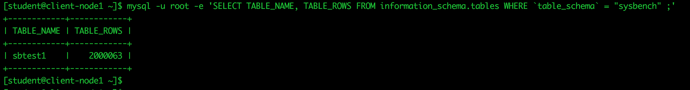
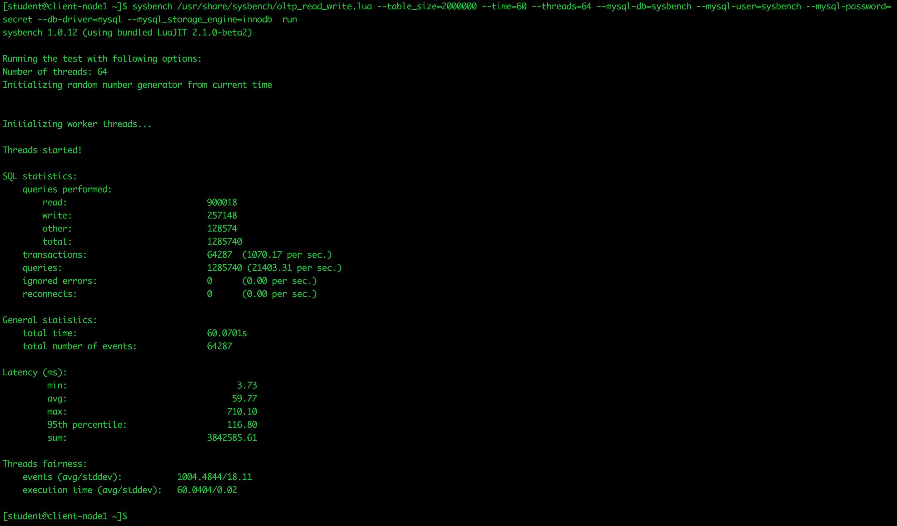

Module - 3 : Ceph Block Storage Provisioning#
Module Agenda
- In this module, you will be provisioning Ceph Block Storage using the RADOS Block Device (RBD) protocol.
- Later, you will use RBD to host a MySQL database and perform some basic operations on the database running on Ceph Block Storage.
- By the end of this module, you will have an understanding of Ceph Block Storage provisioning.
- From your workstation login to the
ceph-adminnode as userstudent(Learn how to Login)
ssh student@<IP Address of ceph-admin node>
Prerequisite
- This module is independent of the other modules. If you intend to follow this module, please make sure that you have a running Ceph cluster before you begin.
- You could setup a Ceph cluster using either of these two methods
1) Follow the hands-on instructions in Module-2 and deploy the Ceph cluster
2) Fromceph-adminnode, execute the following script to setup a Ceph cluster
sh /home/student/auto-pilot/setup_ceph_cluster.sh - Once you have a running Ceph cluster, you will be ready to continue with this module.
- You must run all the commands using user
studenton theceph-adminnode, unless otherwise specified.
Ceph Block Storage Provisioning through RBD Protocol#
In this section you will learn how to provision block storage using Ceph RBD. We will create a thin-provisioned, re-sizable RADOS Block Device (RBD) volume, which you will provision and map to client-node1. Later you will use this RBD volume to store a MySQL database.
- Let’s begin by creating a
rbdstorage pool
ceph osd pool create rbd 64
- Assign an application to this pool
ceph osd pool application enable rbd rbd
- Create a RBD client named
client.rbdwith necessary permissions on Ceph Monitor and OSDs
ceph auth get-or-create client.rbd mon 'allow r' osd 'allow rwx pool=rbd' -o /etc/ceph/ceph.client.rbd.keyring
ceph-commonpackage has already been installed onclient-node1. Next, set permissions on the/etc/cephdirectory
ssh client-node1 -t sudo chown -R ceph:student /etc/ceph
ssh client-node1 -t sudo chmod 775 /etc/ceph
- In order to allow
client-node1to run Ceph commands, add a copy of theceph.confandceph.client.rbd.keyringfiles toclient-node1
scp /etc/ceph/ceph.conf client-node1:/etc/ceph/ceph.conf
scp /etc/ceph/ceph.client.rbd.keyring client-node1:/etc/ceph
- The rest of the commands must be run from
client-node1, so let’s ssh to client-node1
ssh client-node1
- First, let’s verify that
client-node1is able to access the Ceph cluster through userrbd
ceph -s --id rbd
- Next, we shall provision a RBD volume named
mariadb-disk1of size 10G
rbd create mariadb-disk1 --size 10240 --image-feature layering --id rbd
- Verify the RBD volume that we have just created
rbd ls --id rbd ; rbd info mariadb-disk1 --id rbd
- The Red Hat Linux kernel starting with 2.6.32 comes with native support for Ceph RBD protocol, so let’s verify that the RBD module is loaded.
lsmod | grep -i rbd
- If the RBD module is not loaded for some reason, try loading it manually.
sudo modprobe rbd
- Once the RBD module is loaded, the client node is ready to map the Ceph RBD volume. Let’s map
mariadb-disk1RBD volume onclient-node1
sudo rbd map mariadb-disk1 --id rbd
- Verify that the RBD volume is mapped
rbd showmapped --id rbd
Tip
- From the above command output, make a note of the OS device name for
mariadb-disk1RBD volume.
- In most of the cases it’s /dev/rbd0.
-
At this point, we have created a 10GB RBD volume provisioned and mapped on
client-node1as a block device. Let’s make use of this storage by putting a workload on it (MariaDB in our case). -
Create an xfs file-system and mount the RBD volume on the
/var/lib/mysqldirectory and verify
sudo mkfs.xfs /dev/rbd0 ; sudo mount /dev/rbd0 /var/lib/mysql ; sudo df -h /var/lib/mysql
Next, we shall configure the MariaDB database and use Ceph RBD for storage.
- Prepare the MariaDB configuration file for use
sudo wget https://raw.githubusercontent.com/red-hat-storage/ceph-test-drive-bootstrap/master/mysql-module/my.cnf -O /etc/my.cnf
- To save time, a MariaDB package has already been installed. Let’s begin by changing the ownership of the database mount point and start the MariaDB service.
sudo chown -R mysql:mysql /var/lib/mysql
sudo systemctl start mariadb ; sudo systemctl enable mariadb ; sudo systemctl status mariadb
- Login as
mysqladminand run a basic query to verify
mysqladmin -u root version
mysql -u root -e 'SHOW DATABASES'
- If MariaDB is setup properly, you should see an output similar to that as shown below
[ceph@client-node1 ~]$ mysqladmin -u root version mysqladmin Ver 9.0 Distrib 5.5.52-MariaDB, for Linux on x86_64 Copyright (c) 2000, 2016, Oracle, MariaDB Corporation Ab and others. Server version 5.5.52-MariaDB Protocol version 10 Connection Localhost via UNIX socket UNIX socket /var/lib/mysql/mysql.sock Uptime: 41 min 21 sec Threads: 1 Questions: 1000769 Slow queries: 0 Opens: 65 Flush tables: 2 Open tables: 90 Queries per second avg: 403.373 [ceph@client-node1 ~]$ [ceph@client-node1 ~]$ [ceph@client-node1 ~]$ mysql -u root -e 'SHOW DATABASES' +--------------------+ | Database | +--------------------+ | information_schema | | mysql | | performance_schema | | test | +--------------------+ [ceph@client-node1 ~]$
- Verify MySQL is using Ceph block storage
sudo ls -l /var/lib/mysql ; sudo df -h /var/lib/mysql
Success
-
At this point, we have a running MariaDB database instance on top of Ceph Block Storage. Let’s try some database read and write operations using
sysbenchwhich is a popular tool for MySQL database benchmarking. -
For sysbench, create a database user and grant necessary access
mysql -u root -e "CREATE DATABASE sysbench;"
mysql -u root -e "CREATE USER 'sysbench'@'localhost' IDENTIFIED BY 'secret';"
mysql -u root -e "GRANT ALL PRIVILEGES ON *.* TO 'sysbench'@'localhost' IDENTIFIED BY 'secret';"
- Generate some test data in a
sysbenchtable.
Tip
As soon as you start generating test data by running the following command, switch to Ceph Metrics Dashboard to monitor your Ceph cluster activity.
sysbench /usr/share/sysbench/oltp_read_write.lua --threads=64 --table_size=2000000 --time=300 --mysql-db=sysbench --mysql-user=sysbench --mysql-password=secret --db-driver=mysql --mysql_storage_engine=innodb prepare
- Verify sysbench created test table rows
mysql -u root -e 'SELECT TABLE_NAME, TABLE_ROWS FROM information_schema.tables WHERE `table_schema` = "sysbench" ;'
- You will notice a similar output, as shown below

(click on the screen shot for better resolution)
{kind=link}
- Finally using Sysbench, simulate read+write (mix) database operations representing a MariaDB workload on Ceph block storage.
Tip
As soon as you start generating test data by running the following command, switch to Ceph Metrics Dashboard to monitor your Ceph cluster activity.
sysbench /usr/share/sysbench/oltp_read_write.lua --table_size=2000000 --time=60 --threads=64 --mysql-db=sysbench --mysql-user=sysbench --mysql-password=secret --db-driver=mysql --mysql_storage_engine=innodb run
- You will notice a similar output, as shown below

(click on the screen shot for better resolution)
{kind=link}
Important
By any means, this test does not represents Ceph or MariaDB actual performance, so do not take these performance numbers literally. This is only for demonstration purposes.
End of Module
We have reached the end of Module-3. In this module, you have learned how to provision Ceph block storage through the RBD protocol and have verified its functionality by applying a MariaDB database workload. In the next module, we shall cover Ceph Object Storage.